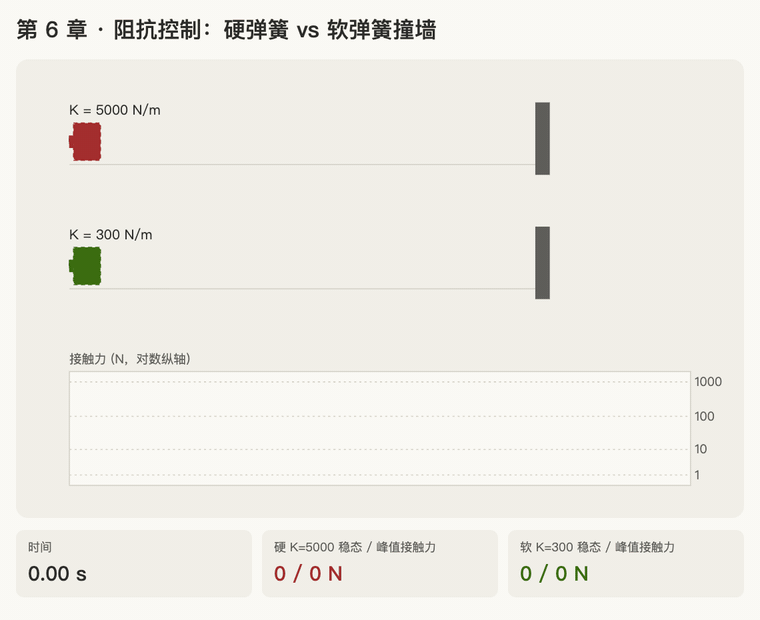

第 6 章 · 底层控制：电流环 → 速度环 → 位置环，再到阻抗与全身控制
本章回答：关节是怎么"听话"的？为什么控制器要一层套一层？位置控制、阻抗控制、力矩控制有什么区别？人形机器人怎么同时管几十个关节还不摔倒？
编写日期：2026-11-04 · 上一章：第 5 章 电气与计算 · 下一章：第 7 章 ROS 2 与中间件 · 总览：00-overview.md
对应原文：materials/text/modern-robotics-lynch-park.txt（Lynch & Park，Modern Robotics，2017 预印本） §11.4.1.1 L19715–L19721（PID，式 11.23）；L19155–L19161 与 L19760–L19770（二阶系统的 \(\omega_n\)、\(\zeta\)）；§11.7 L20600–L20625（阻抗控制）、§11.7.1 L20692、§11.7.2 L20731（导纳控制）；L20772–L20781（驱动器电流内环）。FOC、WBC、MPC、RL 原文没有
本章缩写：PID = Proportional–Integral–Derivative（比例 / 积分 / 微分）；PD / PI 同理；\(\tau_{ff}\)：ff = feedforward（前馈）；FOC（第 1 章）；αβ（Clarke 变换后的两根静止轴）；dq = direct / quadrature axis（直轴 / 交轴）；\(i_q\) / \(i_d\)：交轴 / 直轴电流；WBC（第 1 章）；QP = Quadratic Programming（二次 / 规划）；MPC = Model Predictive Control（模型 / 预测 / 控制）；RL = Reinforcement Learning（强化 / 学习）；PPO = Proximal Policy Optimization（近端 / 策略 / 优化）；\(F_{ext}\)：ext = external（外力）；OSQP = Operator Splitting Quadratic Program（算子分裂二次规划求解器）；OCS2 = Optimal Control for Switched Systems（切换系统的最优控制库）；\(\omega_n\)：n = natural（自然频率）；\(\zeta\) 读 zeta（阻尼比）；ProxQP = Proximal Quadratic Programming（近端 / 二次规划求解器）；sim2real = simulation to reality（仿真到真机，第 9 章细讲）。全部缩写见 附录 · 缩写与术语表
讲解
第 1 步：PID：看误差、看误差的累积、看误差的变化
白话类比：开车跟车。离前车太远就踩油门（比例 P），一直追不上就越踩越深（积分 I），发现距离缩得太快就松油门（微分 D）。
机器人关节里最常见的是 PD + 前馈：
\(\tau_{ff}\) 是前馈力矩（比如抵消重力的那部分），让 PD 只需要修正"剩下的误差"。
第 2 步：级联（cascade）：一层套一层
关节驱动里通常三个环嵌套，内环比外环快 5–10 倍：
位置目标 q* ─→ [位置环 1 kHz] ─→ 速度目标 ─→ [速度环 5–10 kHz] ─→ 电流目标 ─→ [电流环 10–40 kHz] ─→ PWM ─→ 电机
↑ ↑ ↑
输出编码器 电机编码器 相电流采样
为什么要套：内环先把"快的扰动"（电压波动、反电动势）压掉，外环看到的就是一个"听话的"下层，调参也能一层一层来。
FOC（磁场定向控制）：电流环的核心。把三相电流通过 Clarke 变换（3 相 → 2 轴 \(\alpha\beta\)）、Park 变换（按转子角度旋转到 \(dq\) 轴），变成两个"直流量"： - \(i_q\)：产生力矩的分量，\(\tau = K_t\,i_q\)； - \(i_d\)：不产生力矩，通常控制为 0（高速时弱磁才用）。
两个 PI 控制器分别管 \(i_d\)、\(i_q\)，再反变换回三相 PWM。这就是"电流即力矩"的由来，也是第 3 章 QDD 能"用电流感觉地面"的基础。
第 3 步：三种控制模式
| 模式 | 上层给什么 | 碰到东西时 | 适合 |
|---|---|---|---|
| 位置控制 | 目标角度 | 硬顶上去，力越来越大，直到过流或撞坏 | 工业臂、无接触搬运、舵机 |
| 阻抗控制 | 目标位置 + 刚度 K + 阻尼 D | 像弹簧一样被推开，力 ≈ K × 偏差 | 接触操作、人机协作、腿 |
| 力矩控制 | 直接给力矩 | 完全由上层决定 | WBC、RL 策略的底层、力控打磨 |
第 4 步：阻抗控制：让手变成一根可调的弹簧
白话类比：你伸手去开一扇不知道多重的门。如果手臂"僵硬"（高刚度），推不开就会硬顶、伤手腕；如果手臂"放松"（低刚度），碰到门就自然被顶住，力不会太大。
目标是让末端表现得像一个"质量 – 弹簧 – 阻尼"系统：
再用第 2 章的 \(\tau = J^\top F\) 把末端力变成关节力矩（加上重力补偿 \(g(q)\)）：
- 碰墙时，接触力约等于 \(K \times\)（目标陷进墙里的深度）——可预测、有上限。
- 自由空间里 K 大一点跟得准；接近接触时 K 调小，安全。
- 对偶的叫导纳控制（admittance）：测外力，再算出该怎么动——适合本身很硬、只能位置控制但装了力传感器的工业臂。
这也是 VLA 时代的一个重要设计点：π0 这类策略输出目标位置，底层用什么刚度去追，直接决定了接触时的安全性和成功率。
第 5 步：全身控制（WBC）和 MPC
人形机器人伸手拿东西时，不能只管手：手往前伸，重心也往前移，脚下可能就不稳了。
WBC（Whole-Body Control）：每个控制周期解一个二次规划（QP）：
约束： - 动力学方程 \(M(q)\ddot q + h(q,\dot q) = S^\top\tau + J_c^\top f\)； - 脚底接触力 \(f\) 在摩擦锥里（不打滑）； - 关节力矩、角度、速度不超限。
每个"任务"（手跟踪、重心保持、躯干姿态、关节回中）有一个权重或优先级。1 kHz 左右求解，输出每个关节的力矩。
MPC（模型预测控制）：往前看一段时间（比如 0.5 秒），用简化模型（单刚体、倒立摆、质心动力学）预测未来，优化一串控制量，只执行第一步，下个周期重来——和 VLA 的 receding horizon（VLA 第 3 章）是同一个思想。四足 / 人形常用"MPC 规划接触力 + WBC 分配到关节"。
RL 路线：2020 年后，越来越多四足和人形直接用强化学习训练策略：在仿真里用 PPO 训练，50 Hz 输出每个关节的目标角度，再由驱动板上的 PD（固定 Kp/Kd）在 1 kHz 以上追踪。WBC / MPC 的"模型 + 优化"被一个学出来的网络替代，但最底层的 PD + FOC 不变。
动画演示

可交互版：animations/06-impedance.html（拖动刚度 K）。
怎么看：
- 两只"手"（方块）都想走到虚线目标，可目标在墙后面。上面刚度高，下面刚度低。
- 自由空间里，硬的跟得更紧；碰墙后，硬的那只一直压着约 100 N，软的只有约 6 N。
- 底部曲线是接触力（对数纵轴）：稳态力 ≈ K × 目标陷入墙的深度（2 cm）。拖小 K，稳态力按比例变小。
- 刚碰上那一瞬的冲击峰值（右下角第二个数）主要由手的速度和等效质量决定，和 K 关系不大——这就是第 3 章说的"反射惯量大的关节撞上去停不住"，阻抗控制管的是之后压多紧。
公式
| 名称 | 式子 |
|---|---|
| PID | \(u = K_pe + K_i\!\int\!e + K_d\dot e\) |
| 关节 PD + 前馈 | \(\tau = K_p(q^*-q) + K_d(\dot q^*-\dot q) + \tau_{ff}\) |
| FOC 力矩 | \(\tau = K_t\,i_q\) |
| 阻抗控制 | \(\tau = J^\top[K(x^*-x)+D(\dot x^*-\dot x)] + g(q)\) |
| 刚体动力学 | \(M(q)\ddot q + C(q,\dot q)\dot q + g(q) = \tau + J^\top F_{ext}\) |
| 临界阻尼 | \(D = 2\sqrt{K\,m}\) |
练习与作答记录
题 1：阻抗控制刚度 K = 500 N/m，目标点在墙后 2 cm。稳态时手压墙的力大约多少？K 换成 5000 呢？
作答：（待作答）
题 2：级联控制里，如果把位置环频率设得比电流环还高，会出什么问题？
作答：（待作答）
题 3：RL 训练的四足策略输出"目标关节角"，底层用 PD 追。为什么它不直接输出电机电流？（提示：结合第 1 章的频率和第 9 章的 sim2real。）
作答：（待作答）
口诀
内环快、外环慢，一层追一层；电流就是力矩。
位置控制硬顶，阻抗控制像弹簧；全身控制是每毫秒解一道带约束的题。
本章复习卡片
A16 级联控制与 FOC、A17 阻抗控制、A18 WBC / MPC / RL 三条路（见 review.md）
附录 · 延伸阅读
留给以后深入学习用，不影响本章主线。★ 是建议先读的。
推荐阅读
- ★ Lynch & Park，Modern Robotics 第 11 章 Robot Control：运动控制、力控、混合力位控制、阻抗控制。
- ★ Hogan，"Impedance Control: An Approach to Manipulation"（Parts I–III），ASME J. Dynamic Systems 1985：阻抗控制的出处。
- Khatib，"A unified approach for motion and force control of robot manipulators: The operational space formulation"，IEEE J-RA 1987：操作空间控制，WBC 的源头之一。
- Di Carlo et al.，"Dynamic Locomotion in the MIT Cheetah 3 Through Convex Model-Predictive Control"，IROS 2018：四足凸 MPC。
- Kim et al.，"Highly Dynamic Quadruped Locomotion via Whole-Body Impulse Control and Model Predictive Control"（2019）：MPC + WBC 组合。
- Hwangbo et al.，"Learning agile and dynamic motor skills for legged robots"，Science Robotics 2019：RL 运控 + 执行器网络。
- 本仓库：cs285 运控专题。
- 工具：ros2_control 的
joint_trajectory_controller、Pinocchio + ProxQP / OSQP 做 WBC、OCS2 / Crocoddyl 做 MPC。
数学原理
- 传递函数与带宽的直觉；二阶系统 \(m\ddot x + D\dot x + Kx = F\)、自然频率 \(\omega_n = \sqrt{K/m}\)、阻尼比。
- 坐标旋转（Park 变换就是一个 2×2 旋转矩阵）。
- 二次规划：二次目标 + 线性约束。
公式清单
见正文"公式"一节的表。
代码对照：把本章的数字用代码算一遍
用 Python + NumPy（Numerical Python：数值 / Python）把讲义里讲过的数算一遍，不算练习题。代码在仓库本地
robot-system-architecture/solutions/chapter-code/ch06_low_level_control.py，配套测试tests/test_ch06.py，notebook 在notebooks/ch06_low_level_control.ipynb。Mac 上直接能跑，不需要 GPU：
bash cd robot-system-architecture/solutions/chapter-code uv run python ch06_low_level_control.py # 一步一步打印 uv run pytest tests/test_ch06.py
讲义 ↔ 代码（PD 增益、电流、角度是编的；刚度用了动画里的 300 N/m 和编的 2000 N/m）：
| 讲义 | 公式 | 写法 | 跑出来 |
|---|---|---|---|
| 第 1 步 PD + 前馈 | \(K_p(q^*-q) + K_d(\dot q^*-\dot q) + \tau_{ff}\) | pd_ff(...) |
5 − 1 + 3 = 7 N·m |
| 第 2 步 FOC | Clarke → Park | clarke、park |
三相电流 → \(i_d = 0\)、\(i_q = 5\) A |
| 第 2 步 电流即力矩 | \(\tau = K_t i_q\) | 0.1 * i_q |
0.5 N·m |
| 第 4 步 阻抗撞墙 | 稳态 \(F \approx K \times\) 深度 | impedance_wall(k) |
K = 300 → 5.98 N；K = 2000 → 39.2 N |
| 公式表 临界阻尼 | \(D = 2\sqrt{Km}\) | critical_damping |
34.64、89.44 N·s/m |
关键几行：
f_ctrl = k * (depth - x) + d * (0.0 - v) # 阻抗控制：F = K(x* − x) + D(ẋ* − ẋ)
f_wall = -k_wall * x if x > 0 else 0.0 # 墙：一根很硬的弹簧，只在 x > 0（陷进墙里）时推回来
v += (f_ctrl + f_wall) / m * dt # 牛顿第二定律，一步一步往前积分
x += v * dt
代码里才看得到的 3 件事：
- 仿真稳态力比 K × 2 cm 略小（5.98 而不是 6.0）：墙本身也是弹簧（1e5 N/m），手会陷进去一点，离目标的距离就不到 2 cm 了。测试放宽到 3%。
- 三相电流加起来是 0（打印成 −8.9e-16 是浮点误差）；所以 Clarke 变换从 3 个数变成 2 个数不丢信息。
- Park 变换就是一个 2×2 旋转矩阵：按转子角度把 (α, β) 转到跟着转子走的 (d, q) 上，交流量就变成了直流量。
自己改一改（不影响练习答案）：
- 把
impedance_wall的阻尼改成临界阻尼的十分之一，看撞墙后力会不会来回弹。 - 把 FOC 例子里的
i_d改成 −2（弱磁），看三相电流和力矩怎么变。